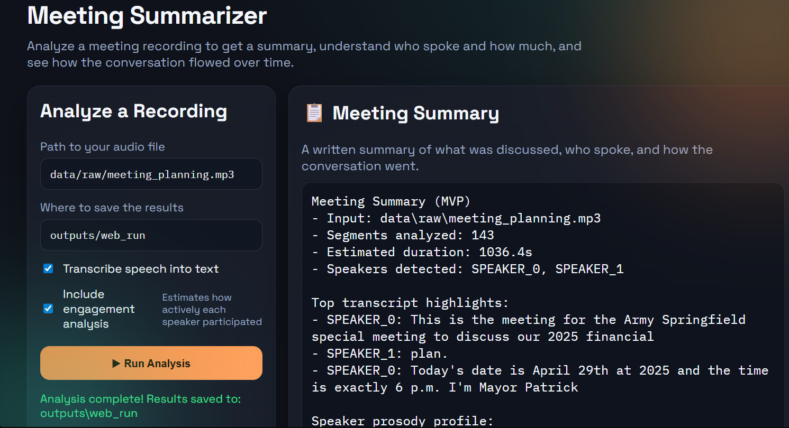
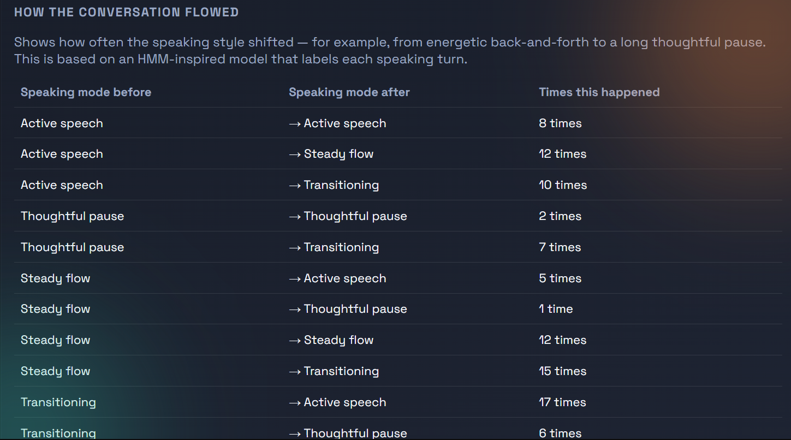
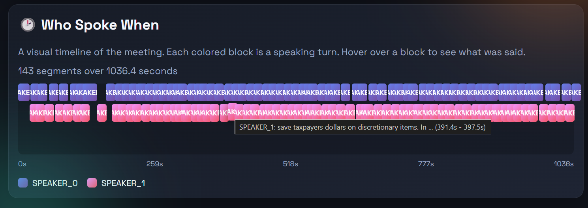
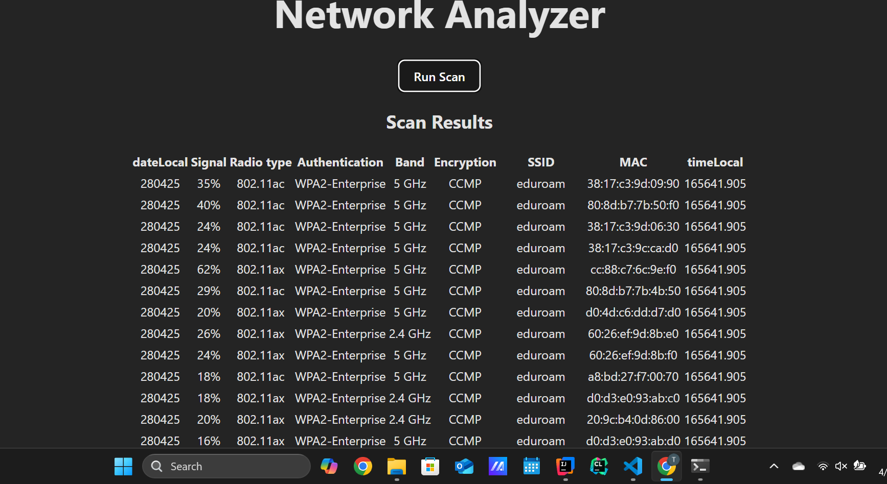
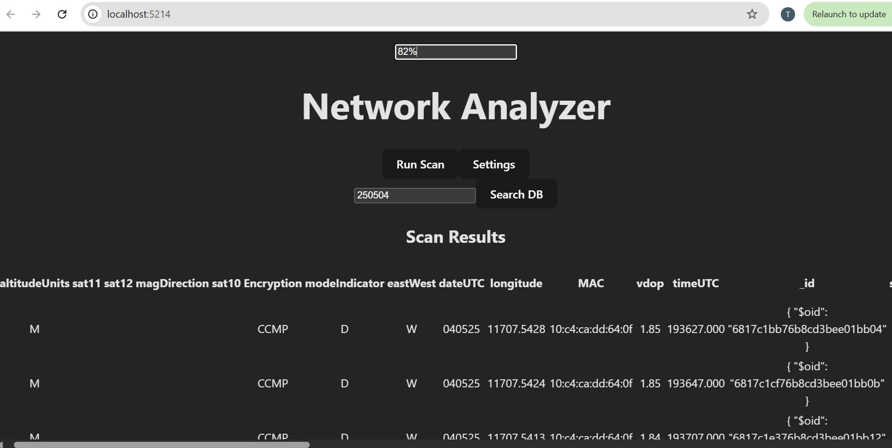
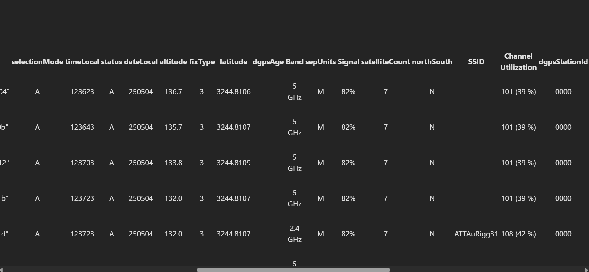
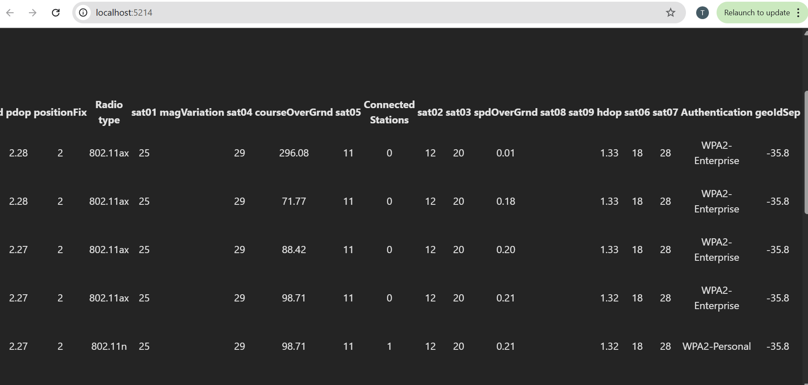

About
I am a recent Computer Science graduate interested in software engineering, backend systems, AI, and building practical tools. I enjoy working on projects that combine strong technical design with real-world usefulness.
Featured Project
Speech-Aware Meeting Summarizer
A speech-aware meeting intelligence platform that transcribes, segments, analyzes engagement, and generates structured summaries from meeting recordings.
- Automatic transcription
- Speaker-aware analysis
- Topic segmentation
- Interactive web interface
- End-to-end processing pipeline
Projects
Speech-Aware Meeting Summarizer
Built a speech-aware meeting analysis system that generates enriched meeting summaries using transcription, speaker diarization, prosody analysis, topic segmentation, and engagement metrics.
Skills: Python • Flask • Speech Processing • ASR • Machine Learning • Testing



NetworkAnalyzer
Developed a network analysis application for a software systems course, demonstrating system design, backend development, and frontend integration.
Skills: Java • Vue • TypeScript • Full-Stack Development • System Design




AI Car Brand Classification
Built a machine learning model to classify car brands from images using computer vision techniques.
Skills: Python • Machine Learning • Computer Vision • Image Classification
Skills
Languages: Python, Java, JavaScript, C++
Tools: Git, GitHub, Linux, VS Code
Interests: backend engineering, AI, full-stack development
Contact
Email me at thomasculhane95@gmail.com.